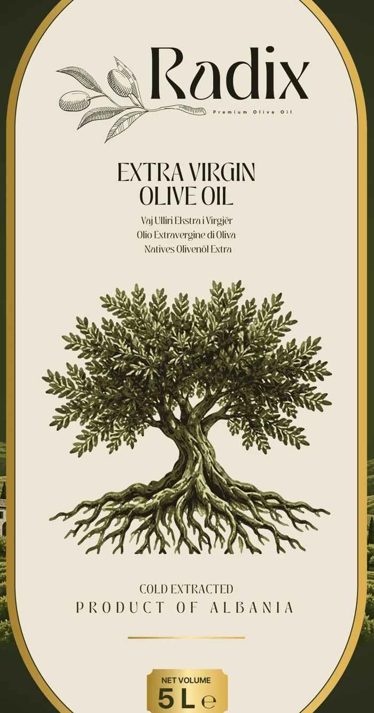
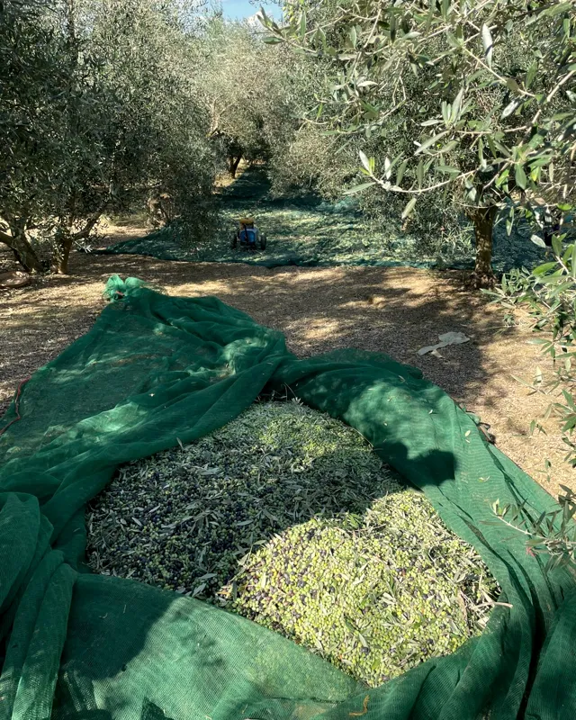
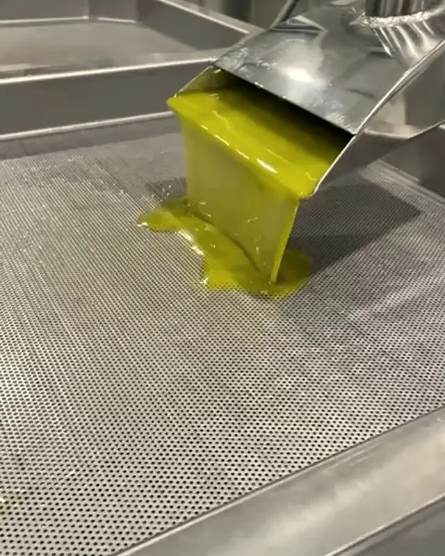
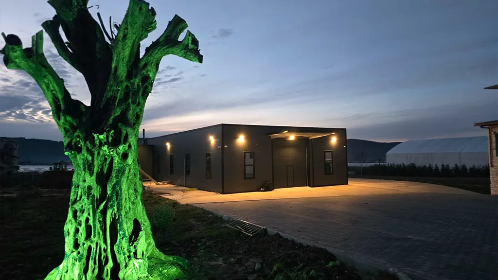

The highest grade there is
Extra virgin is the top category of olive oil. It means the oil is pure olive juice, obtained only by mechanical means: no chemicals, no refining, no blending with lower grades. Radix is extra virgin, always.
Extra Virgin Olive Oil · Product of Albania
Radix is a premium cold-extracted extra virgin olive oil from the olive groves of Sulova, produced at the Sula Olive Oil mill. From a single display bottle to full bulk shipments, we supply every kind of business, in every country.

Our origin
Great olive oil starts below the surface: in the soil, the climate and the people who tend the trees. Radix takes its name from the Latin word for root, because every drop can be traced back to where it began.
Our olives are selected in the Sulova region of central Albania, a land of rolling hills and centuries-old groves, and harvested by local farmers who know every tree. They are brought fresh to our own mill, where they are cold-extracted by mechanical means only.
Pure, honest, unmistakably Mediterranean.
Why it's exceptional
You don't need to be an expert to choose well. These are the things that separate a premium extra virgin olive oil from an ordinary one, and how Radix does each of them.
Extra virgin is the top category of olive oil. It means the oil is pure olive juice, obtained only by mechanical means: no chemicals, no refining, no blending with lower grades. Radix is extra virgin, always.
Heat helps a mill squeeze out more oil, but it burns away aroma and natural nutrients. "Cold extracted" means the oil never goes above 27°C. Radix is cold extracted, so it keeps the fresh taste of the olive.
Olives start to lose quality from the moment they are picked. Ours come from local farmers in the Sulova region and go straight to our own mill, so there is no long wait and no middleman in between.
About 80% of the fat in Radix is monounsaturated (73 g in every 100 ml), the type of fat that has made olive oil the heart of the Mediterranean diet.
Light, air and heat are what make olive oil go stale. Radix rests in sterile tanks at controlled temperature and is sealed in hermetic packaging, so it arrives as fresh as the day it was made.
Many oils on the shelf are blends from several countries. Radix comes from one region and one mill: you always know exactly where it was grown and who made it.
The range
One oil, packed the way your business needs it. Tell us the format and the quantity: we take care of the rest.

250 ml · 500 ml · 750 ml · 1 L
Elegant bottles for delis, gourmet shops, gift baskets, hotels and tables that deserve the best. Order a few or a few thousand.
5 L
The same premium oil in a practical tin, made for restaurants, hotels and caterers who cook with quality every day.
Drums · IBC · Tankers, by the ton
Large volumes for importers, bottlers and food manufacturers. There is no ceiling on quantity: we scale with your demand.
Need a different size or packaging for your market? Ask us. If it holds olive oil, we can supply it.
Tell us what you need →From grove to bottle

Fresh olives from selected groves of the Sulova region, harvested by local farmers and delivered straight to our mill.

Every batch is washed and cleaned of leaves and impurities before processing begins.

The oil is obtained directly from olives and solely by mechanical means, at temperatures below 27°C, to keep its flavour and natural nutritional value intact.

Stored in sterile tanks at controlled temperatures and sealed in hermetic packaging, so it reaches you as fresh as the day it was made.
For business
Buying Radix means buying directly from the mill that makes it. No intermediaries between the grove and your order: just a premium oil at a genuinely competitive price.
A distinctive premium brand for your portfolio, with a multilingual label ready for international markets and space for your importer details.
Consistent extra virgin olive oil in bulk, by the ton, with no upper limit on volume and a supply that grows with you.
Display bottles for your shelves and 5 L tins for your kitchen. Even a handful of bottles is welcome: there is no minimum order.


The producer
Radix is produced, bottled and packaged by Sula Olive Oil SHPK, a modern olive oil mill in Selitë, Elbasan, Albania. With years of experience in olive oil production, Sula combines the region's olive-growing tradition with modern extraction technology, under one roof, from the olive to the sealed bottle.
Visit sulaoliveoil.com →FAQ
No. You can order a few display bottles or several tons of bulk oil. Every order receives the same care.
Yes. We ship worldwide. Tell us your destination and we will include delivery in your quote.
Send us a request with the format, the quantity and the destination. You will receive a personalised quote based on your volume, with producer pricing.
Glass bottles from 250 ml to 1 L, 5 L tins and bulk supply in drums, IBC tanks or tankers. Other formats are available on request.
Radix is made from selected olives of the Sulova region and cold-extracted at the Sula Olive Oil mill in Selitë, Elbasan, Albania.
Yes. There is no upper limit on quantity, and we can plan recurring supply around your needs.
Request a quote
Tell us what you need and where it should go. We reply personally with a tailored offer.